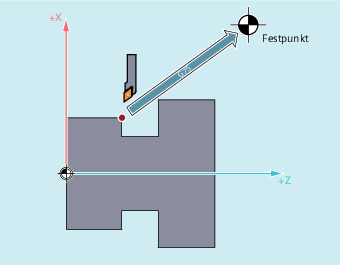

Mit dem satzweise wirksamen Befehl G75 können Achsen einzeln und unabhängig voneinander auf feste Punkte im Maschinenraum gefahren werden, z. B. auf Werkzeugwechselpunkte, Beladepunkte, Palettenwechselpunkte etc.
Die Festpunkte sind Positionen im Maschinenkoordinatensystem, die in Maschinendaten (MD30600 $MA_FIX_POINT_POS[n]) abgelegt sind. Pro Achse können maximal 4 Festpunkte definiert sein.
Die Festpunkte können aus jedem NC-Programm unabhängig von aktuellen Werkzeug- oder Werkstückpositionen angefahren werden. Vor der Bewegung der Achsen wird ein interner Vorlaufstopp durchgeführt.
Für das Anfahren von Festpunkten mit G75 müssen folgende Voraussetzungen erfüllt sein:
Die Festpunktkoordinaten müssen exakt ermittelt und in Maschinendaten hinterlegt sein.
Die Festpunkte müssen innerhalb des gültigen Verfahrbereichs liegen (→ Software-Endschalter-Grenzen beachten!)
Die zu verfahrenden Achsen müssen referenziert sein.
Es darf keine Werkzeugradiuskorrektur aktiv sein.
Es darf keine kinematische Transformation aktiv sein.
Die zu verfahrenden Achsen dürfen an keiner aktiven Transformation beteiligt sein.
Keine der zu verfahrenden Achsen darf Folgeachse einer aktiven Kopplung sein.
Keine der zu verfahrenden Achsen darf Achse eines Gantry-Verbundes sein.
Compile–Zyklen dürfen keinen Bewegungsanteil aufschalten.
| Festpunkt anfahren | ||
| Name der Maschinenachse, die zum Festpunkt verfahren werden soll Es sind alle Achsbezeichner zulässig. | ||
| Der Positionswert ist ohne Bedeutung. Es wird daher in der Regel der Wert "0" angegeben. | ||
| Festpunkt, der angefahren werden soll | ||
| Festpunktnummer | ||
Wertebereich: | 1, 2, 3, 4 | ||
Hinweis: | |||
| Hinweis |
In einem |
| Hinweis |
Der Wert der Adresse |
Für einen Werkzeugwechsel sollen die Achsen X (= AX1) und Z (= AX3) auf die feste Maschinenachsposition 1 mit X = 151,6 und Z = -17,3 fahren.
Maschinendaten:
MD30600 $MA_FIX_POINT_POS[AX1,0] = 151.6
MD30600 $MA_FIX_POINT[AX3,0] = 17.3
NC–Programm:
| Programmcode | Kommentar |
|---|---|
| … | |
| N100 G55 | ; Einstellbare Nullpunktverschiebung aktivieren. |
| N110 X10 Y30 Z40 | ; Positionen im WKS anfahren. |
| N120 G75 X0 Z0 FP=1 M0 | ; Die X–Achse fährt auf 151,6; und die Z–Achse fährt auf 17,3 (im MKS).; Jede Achse fährt für sich mit maximaler Geschwindigkeit.; In diesem Satz dürfen keine zusätzlichen Bewegungen aktiv sein.; Damit nach dem Erreichen der Endpositionen; weiterhin keine Zusatzbewegungen durchgeführt werden,; ist hier ein Stopp eingefügt. |
| N130 X10 Y30 Z40 | ; Es wird wieder die Position von N110 angefahren.; Die Nullpunktverschiebung ist wieder aktiv. |
| … |
| Hinweis |
Ist die Funktion "Werkzeugverwaltung mit Magazinen" aktiv, reicht die Hilfsfunktion Grund: Bei der Einstellung "Werkzeugverwaltung mit Magazinen ist aktiv" werden die Hilfsfunktionen für den Werkzeugwechsel nicht an die PLC ausgegeben. |
Siehe auch:
Festpunkt anfahren (G75): Weitere Informationen